HIST 101 · U.S. History to 1877
Uncle Tom’s Cabin
The Novel That Answered a Law
Study Buddy Edition · Chapter 13

The Law Behind the Novel
The Compromise of 1850 was a package of five laws meant to settle slavery in the land taken from Mexico.
- California entered the Union as a free state
- Settlers in New Mexico and Utah would decide on slavery
- The slave trade, not slavery, ended in Washington, D.C.
- A harsh new Fugitive Slave Act became law on September 18, 1850
The new law denied accused runaways a jury and could fine anyone who helped a fugitive $1,000.
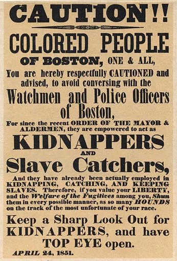
Harriet Beecher Stowe
- Born in 1811 into a famous family of preachers
- 1832–1850: lived in Cincinnati and watched slavery across the Ohio River in Kentucky
- 1849: her baby son Charley died of cholera
- 1850: moved to Maine just as the Fugitive Slave Act passed

One Year Later: A Novel
Harriet Beecher Stowe wrote in response to the Fugitive Slave Act.
Uncle Tom’s Cabin was serialized in the National Era (June 1851–April 1852), then appeared as a book on March 20, 1852.
Roughly 300,000 U.S. copies in the first year; about 1.5 million in Britain.
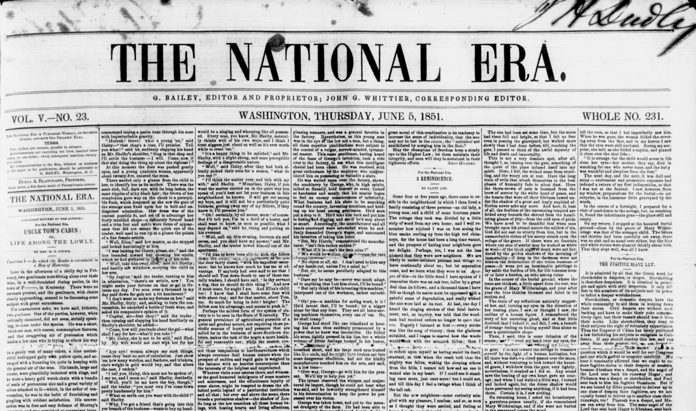

Stowe’s Sources
She built her story from real testimony:
- Weld and the Grimké sisters, American Slavery As It Is (1839)
- Josiah Henson’s life story (1849)
- Ohio River stories, like a mother who crossed the ice with her child
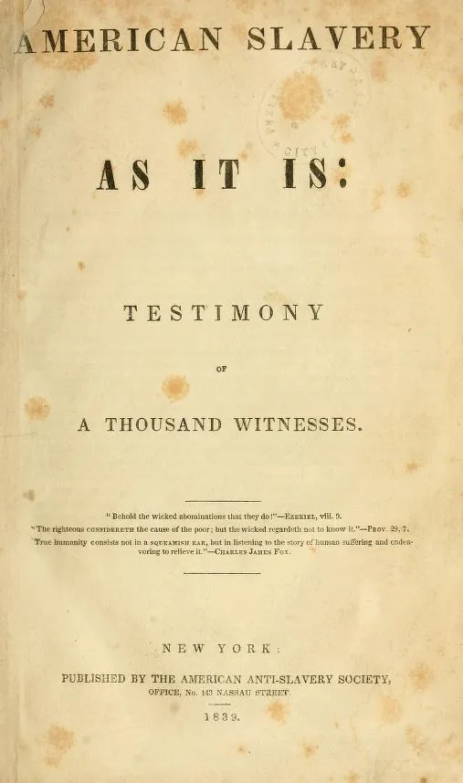

The Story, Part 1: Eliza and Tom
- A Kentucky farmer in debt sold Tom and little Harry to a slave trader
- Harry’s mother, Eliza, ran with him across the icy Ohio River
- Tom stayed, was sold south, and saved young Eva St. Clare from drowning
- Eliza’s husband, George Harris, escaped to join her on the way to Canada
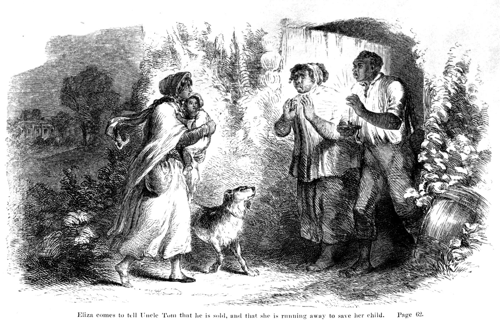
The Story, Part 2: Legree’s Plantation
- In New Orleans, Eva and her father died, and Tom was sold to Simon Legree, a brutal Louisiana cotton planter
- Legree had also bought two enslaved women, ; they escaped and hid
- Tom refused to tell where they were hiding, so Legree had him whipped
- Dying from the beating, Tom forgave the two men who whipped him (Sambo and Quimbo)

The Vision in Church
- Early 1851: a communion service at First Parish Church in Brunswick, Maine
- Stowe later said the death of Uncle Tom passed before her eyes like a vision
- She went home and wrote that scene first, then built the story toward it
- Late in life she was reported to say that God wrote the book, not she
This is Stowe’s own later account, retold by her family. It tells us how she understood the book, not exactly what happened that Sunday.
Sentimental Fiction
Sentimental fiction: stories written to make readers feel deeply, and to turn those feelings into moral action.
- Homes, mothers, children, and deathbeds
- A narrator who speaks straight to the reader
- Tears as a sign of a good heart
- Stowe’s goal: readers who “feel right”
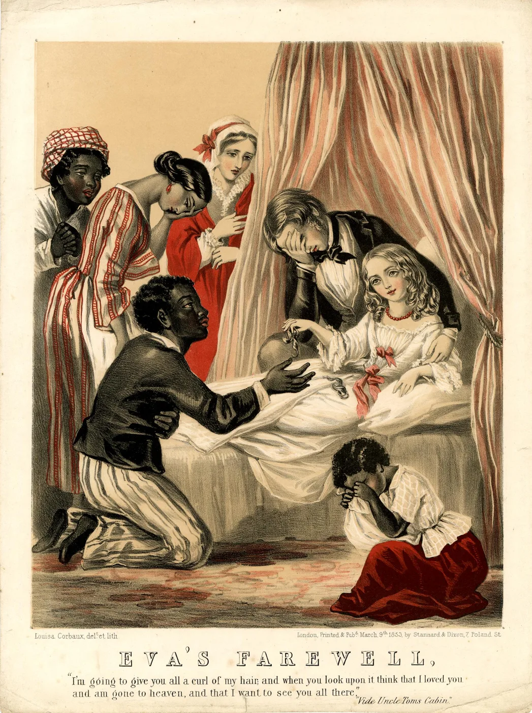
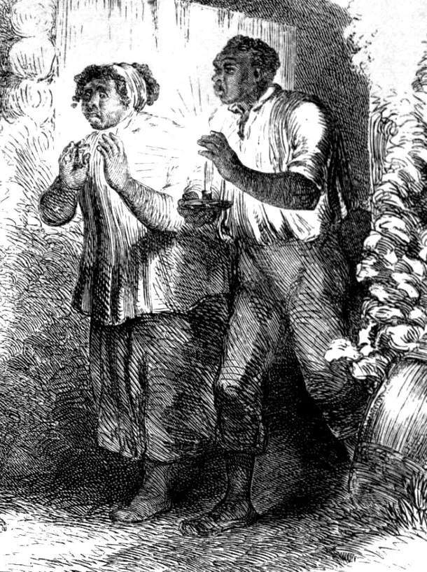
Why the Book Mattered
- Made the human cost of slavery emotionally concrete
- Converted many moderate Northerners
- Suppressed across the South; inspired “Anti-Tom” novels
- Stage versions circulated for decades
The perception that the novel shifted opinion was widespread, and the story soon spread far beyond the book.
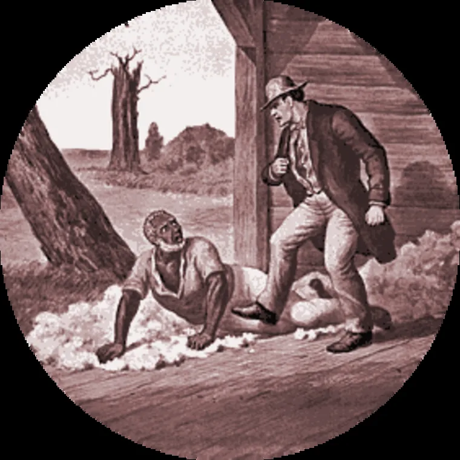
“Uncle Tom Mania”
- Songs and sheet music for parlor pianos, from 1852 on
- Prints and illustrations of favorite scenes for the wall
- Staffordshire porcelain figures, plates, and other merchandise
- Card and board games, and stage plays called “Tom shows”
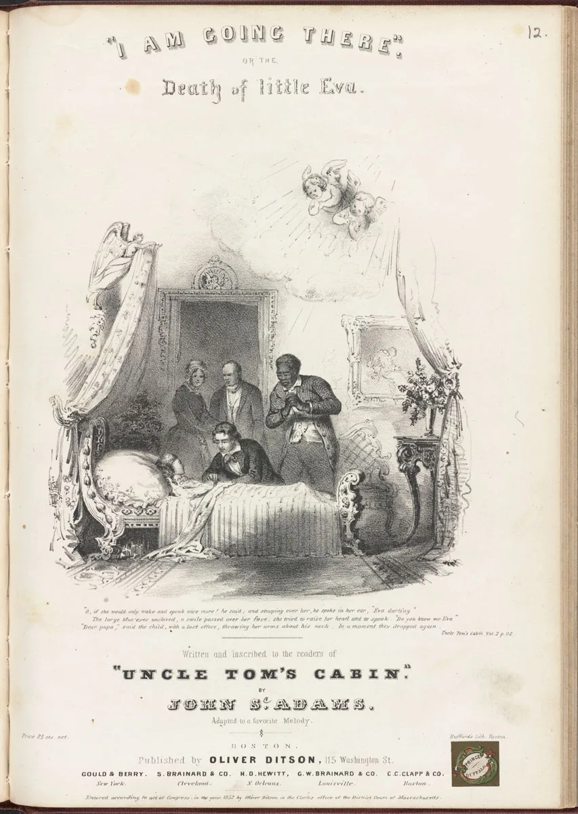
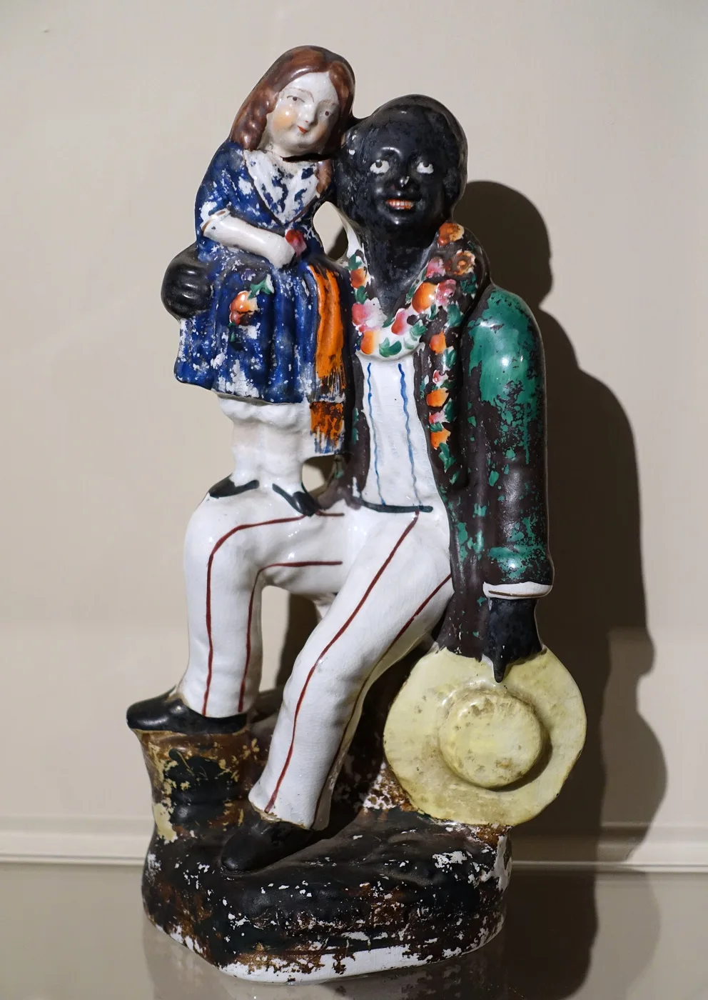
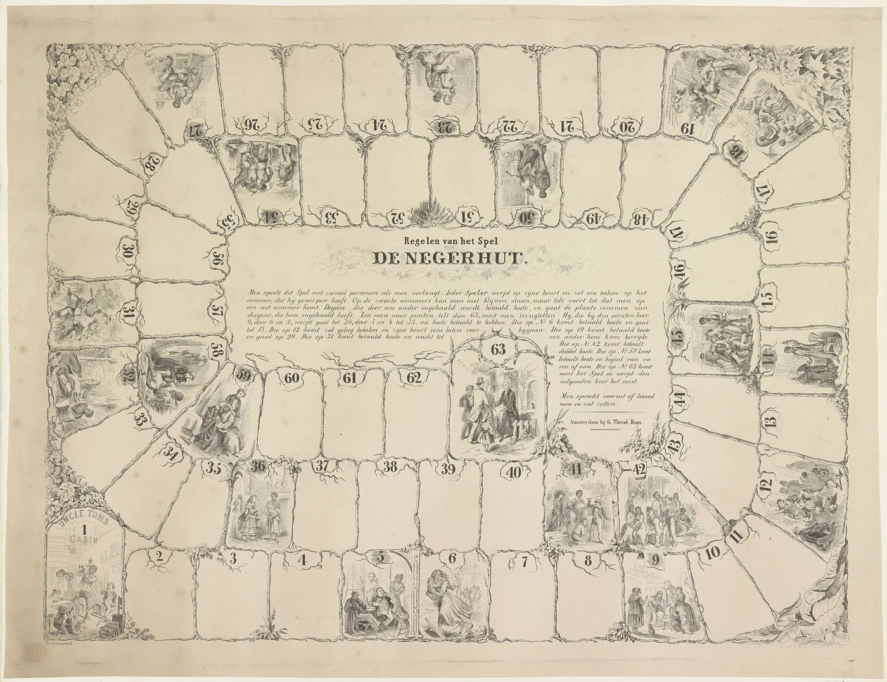
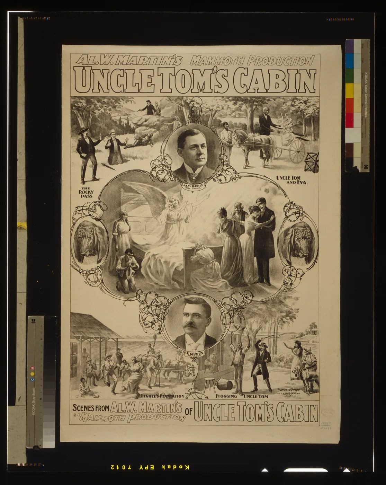
Across the Atlantic
- 1852: dozens of cheap British editions; translations across Europe followed
- 1853: Stowe toured Britain to cheering crowds
- More than half a million British women signed an antislavery address to American women
- 1861–65: antislavery opinion made backing the Confederacy politically risky
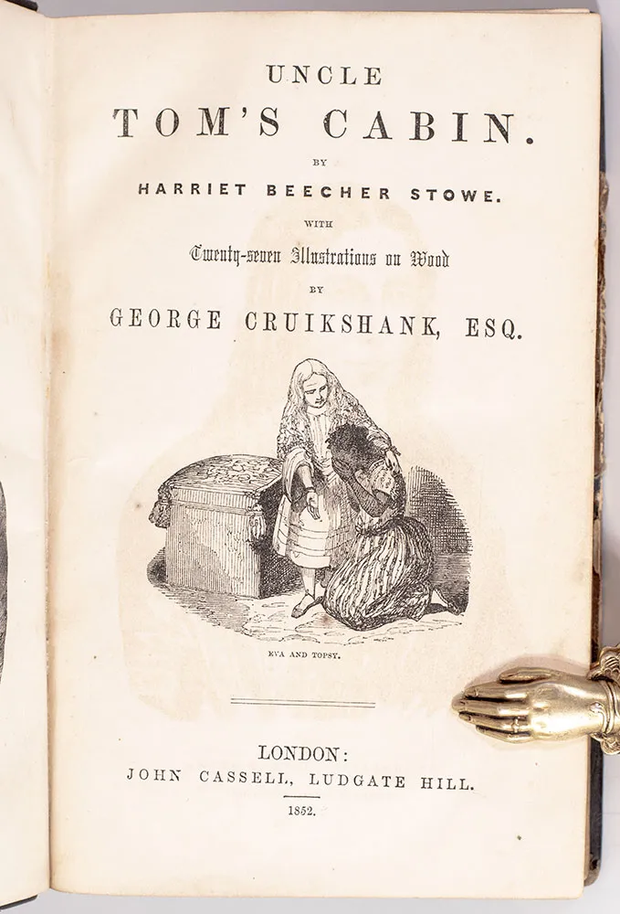

Video: The Novel That Changed America
The Southern Response
- White Southern reviewers called it a slander: false, ignorant, and dangerous
- 1857: Samuel Green, a free Black Maryland minister, got ten years, partly for owning a copy
- Writers answered with “Anti-Tom” novels like Aunt Phillis’s Cabin (1852)
- 1853: Stowe answered with A Key to Uncle Tom’s Cabin, laying out the laws, ads, and testimony behind her story

Black Readers Respond
- The ending: Tom dies, young George Shelby frees his slaves, and George Harris takes his family to Liberia
- George Harris: the enslaved man who escaped with his wife, Eliza, and son, Harry
- Frederick Douglass praised the novel and met Stowe in 1853
- Martin Delany, a Black abolitionist, physician, and writer: “Mrs. Stowe knows nothing about us”
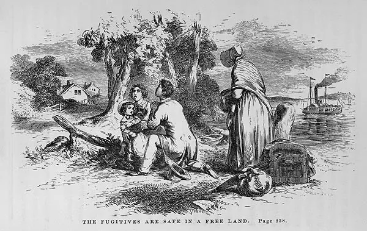
A National Sin
Stowe ended with “Concluding Remarks,” speaking directly to her readers:
- Her incidents were “to a very great extent, authentic”
- The North shared the guilt: it profited from slavery and enforced the 1850 law
- Every reader could “see to it that they feel right”
“Both North and South have been guilty before God; and the Christian church has a heavy account to answer.”Harriet Beecher Stowe, “Concluding Remarks,” Uncle Tom’s Cabin (1852)

Uncle Tom in the Novel
- A strong, middle-aged, deeply Christian man who reads his Bible
- Trusted on the Shelby farm, yet sold away from his wife and children to pay debts
- Refuses Legree’s order to whip other enslaved people
- Refuses to betray and dies rather than give in: passive resistance and martyrdom
Later, “Uncle Tom” became an insult for a servile Black man, largely through stage “Tom shows” and minstrel-style adaptations that made him old and submissive.
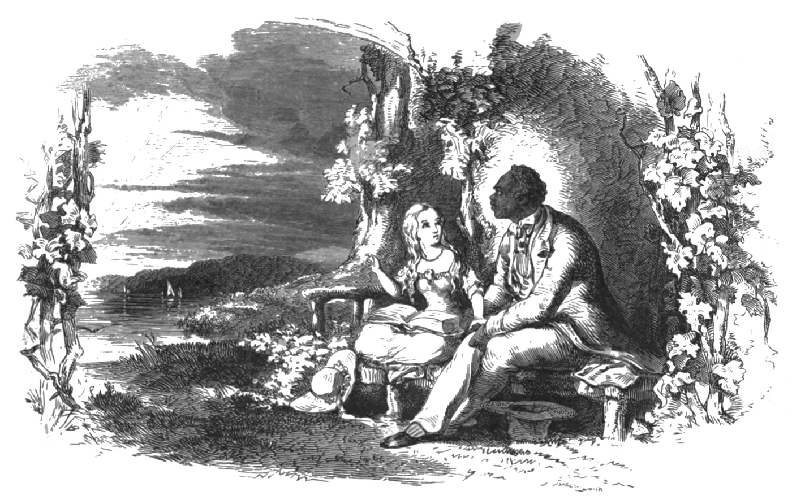
Read It in 1852
Choose one reader. Write two or three sentences in that person’s voice:
- A Northern Whig who supported the Compromise of 1850
- A free Black abolitionist in Rochester
- A planter’s wife in Virginia
- A mill worker in Manchester, England
Which scene moves or angers your reader most? What might your reader do after finishing the book?
Vocabulary
- Fugitive Slave Act of 1850: federal law that strengthened the recovery of alleged runaways; Stowe wrote her novel in answer to it.
- Uncle Tom’s Cabin: 1852 novel by Harriet Beecher Stowe, first serialized in the National Era.
- Sentimental fiction: stories written to make readers feel deeply, especially about home and family, and to act on those feelings.
- Anti-Tom novels: proslavery novels written to answer Stowe.
- Colonization: the idea of sending Black Americans to Africa, as in Liberia.
Where to Go Next
In 1850 Stowe vowed to write something that would make the nation feel slavery. Her Tom was a strong man who died rather than betray two women.
On stage he became a stooped, smiling old servant, and his name became an insult.
Lecture 3A: How “Uncle Tom” became an insult →
Primary source packet: Uncle Tom in Stowe’s own words →
The main lesson ends here. Next: the Independent Study section.
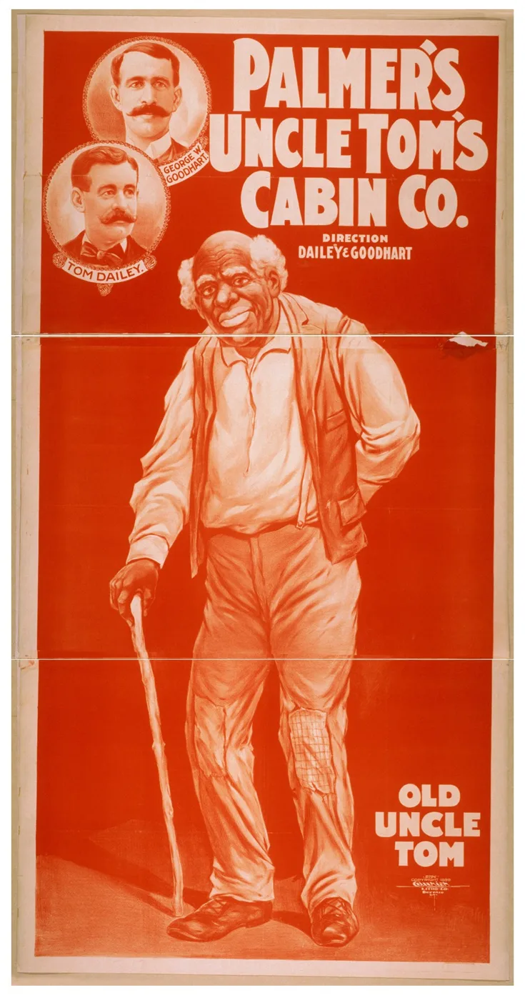
Pierian Spring
Independent Study
Go deeper on your own
Continue on your own: two more stories about the novel, each with a review question to answer, and then the Check Yourself quiz.
“A little learning is a dang’rous thing;
Drink deep, or taste not the Pierian spring.”Alexander Pope, An Essay on Criticism (1711)
Anti-Tom novels · The Lincoln anecdote · Check Yourself · Sources
Independent Study · The book war
Southern Literary Response
Pro-slavery writers produced some 20–30 “Anti-Tom” novels. Stowe answered with A Key to Uncle Tom’s Cabin (1853), a documentary defense.
- Kind masters, contented enslaved people, happy plantation families
- Cruel Northern factories and “wage slaves”
Review question: What did Anti-Tom novels claim about slavery, and how did Stowe answer them?
Independent Study · Weighing the evidence
The Lincoln Anecdote
The story that Lincoln greeted Stowe as “the little woman who made this great war” first appeared in print in 1896, 34 years after their December 1862 meeting, and rests on family tradition. No contemporary record confirms the words.
Treat it as a legend: the meeting probably happened; the line is unconfirmed.
Review question: Why do historians treat Lincoln’s famous line to Stowe as a legend rather than a fact?
Independent Study · Check Yourself
Check Yourself
Click an answer to see whether it is right, the correct answer, and why.
1. By Stowe’s own later account, which scene came to her like a vision in church?
2. How did sentimental fiction like Stowe’s try to change minds?
3. Why did the novel’s popularity in Britain matter during the Civil War?
Independent Study · Check Yourself
Check Yourself, Part 2
Click an answer to see whether it is right, the correct answer, and why.
4. In her “Concluding Remarks,” who did Stowe say was guilty of slavery?
5. What did Anti-Tom novels like Aunt Phillis’s Cabin claim?
6. Why is Lincoln’s line to Stowe about “this great war” treated as legend?
Sources
Primary sources
- Fugitive Slave Act, Sept. 18, 1850, 9 Stat. 462 (Avalon Project, Yale Law School).
- Harriet Beecher Stowe, Uncle Tom’s Cabin (National Era, 1851–52; Boston: John P. Jewett, 1852), including “Concluding Remarks”; A Key to Uncle Tom’s Cabin (1853).
- Theodore D. Weld et al., American Slavery As It Is (1839); Josiah Henson, The Life of Josiah Henson (1849).
- Martin R. Delany to Frederick Douglass, March 22 and April 18, 1853 (Frederick Douglass Papers Project).
- Mary H. Eastman, Aunt Phillis’s Cabin (1852); Caroline Lee Hentz, The Planter’s Northern Bride (1854).
- “An Affectionate and Christian Address of Many Thousands of Women of Great Britain and Ireland” (1853); Stowe, “A Reply,” Atlantic Monthly, January 1863.
- Charles E. Stowe, Life of Harriet Beecher Stowe, Compiled from Her Letters and Journals (1889).
- Annie Fields, “Days with Mrs. Stowe,” Atlantic Monthly, August 1896.
Scholarship and references
- David M. Potter, The Impending Crisis, 1848–1861 (1976).
- Joan D. Hedrick, Harriet Beecher Stowe: A Life (1994).
- Jane Tompkins, Sensational Designs (1985).
- Audrey A. Fisch, American Slaves in Victorian England (2000).
- Howard Jones, Union in Peril: The Crisis over British Intervention in the Civil War (1992).
- Daniel R. Vollaro, “Lincoln, Stowe, and the ‘Little Woman/Great War’ Story,” Journal of the Abraham Lincoln Association 30, no. 1 (2009).
- Stephen Railton, ed., Uncle Tom’s Cabin & American Culture (University of Virginia).
- James Baldwin, “Everybody’s Protest Novel” (1949).
Images
- All images are period works in the public domain (Library of Congress, Harvard Schlesinger, Internet Archive, British Museum) via Wikimedia Commons, plus the Concord Museum and the Rijksmuseum, except the Little Eva sheet music (Boston Public Library, CC BY 2.0) and the English plate (photo CC0). The Cruikshank title page is a photograph of an 1852 copy. Each slide’s caption gives its source.